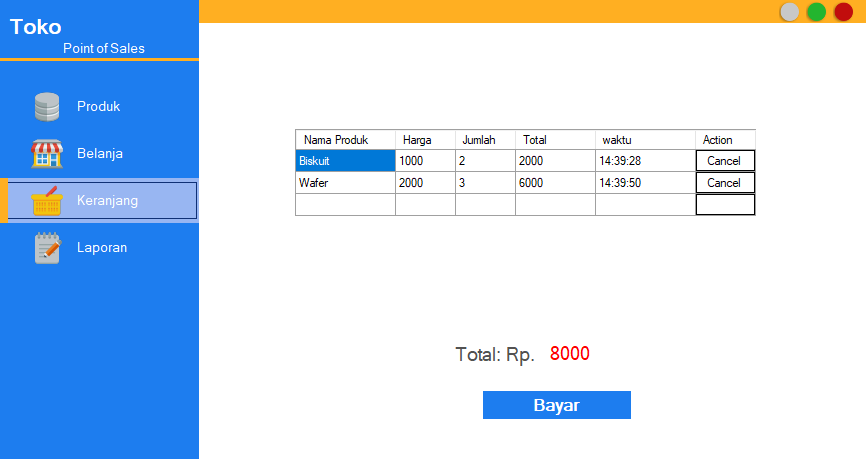

Kemampuan
C#
VB
PHP
JavaScript
MySQL Query
Pendidikan
SMA Budi Mulia
Institut Bisnis dan Informatika Kwik Kian Gie
Project

Point of Sale
VB.NET
Aplikasi Desktop Point of Sale dengan menggunakan bahasa pemrograman VB.NET.
Details
Internet Banking
PHP Native
Internet Banking berbasis website, dibuat dengan menggunakan bahasa pemrograman PHP.
Details
Pendataan Penduduk
PHP Native
Pencatatan data penduduk berbasis website menggunakan bahasa pemrograman PHP.
Details
Psikotes Online
PHP Native
Psikotes Online berbasis website yang dibuat menggunakan bahasa pemrograman PHP.
Details
Pendataan Bimbel
PHP Native
Sistem pendataan murid bimbel yang dibuat menggunakan bahasa pemrograman PHP.
Details